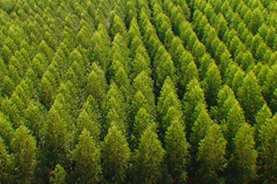

01
REGENERAÇÃO
COMUNIDADE EM MOVIMENTO
A Verde Ação aproxima pessoas, território e propósito em experiências de voluntariado que fazem o bem sair do plano e ganhar chão.
VERDE AÇÃO, NA PRÁTICA
Somos uma rede de pessoas que acredita no poder das pequenas atitudes consistentes. Plantamos, aprendemos, mapeamos e preservamos junto com quem vive cada território.
Ver como atuamosFRENTES DE AÇÃO
Escolha uma frente, conheça suas atividades e encontre a forma mais próxima de participar.
REGENERAÇÃO

CONSCIÊNCIA

CONHECIMENTO

CONTINUIDADE
UMA IDEIA SIMPLES
Por isso, criamos encontros possíveis: com escuta, aprendizado e tarefas que cabem na rotina. Você não precisa saber tudo para começar — só precisa vir.
SEU PRÓXIMO PASSO
Conte onde você está e qual frente mais faz sentido. Entraremos em contato quando houver uma ação compatível com seu interesse.
FRENTE DE AÇÃO
Junte-se a uma ação prática para ampliar o cuidado com áreas verdes.
Quero participar